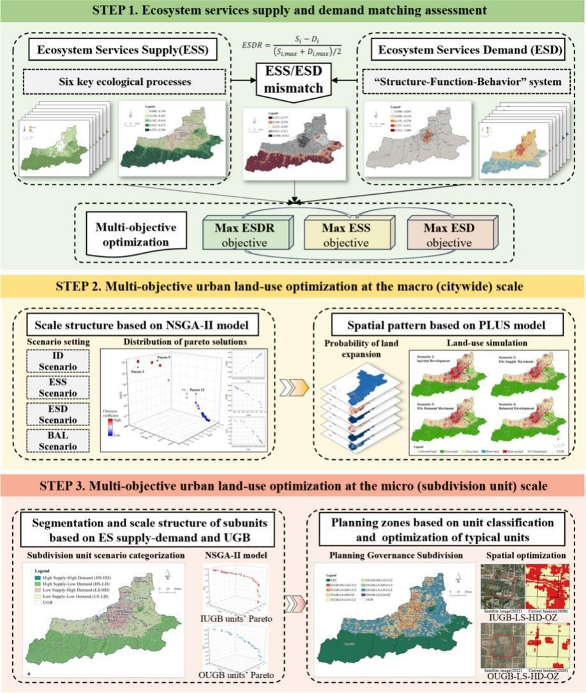
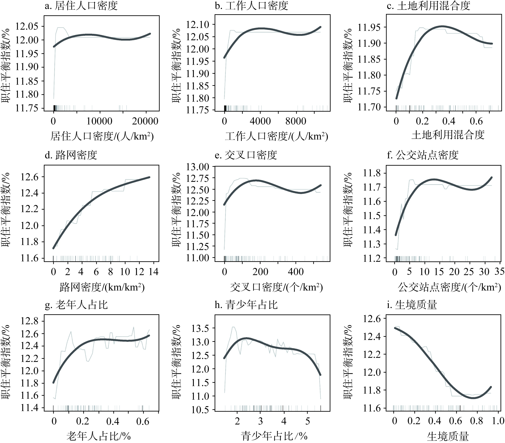
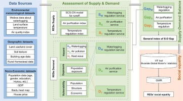

Climate Justice · Ecological Footprint · Urban Analytics
About Me
Greetings! I am Kaili (Kelly) Zhang, a Ph.D. student in Urban and Regional Science in the Department of Landscape Architecture & Urban Planning at Texas A&M University, advised by Dr. Boqian Xu. My research interests center on climate justice and ecological footprint, with a focus on how spatial data science, urban analytics, and emerging AI methods can support more equitable and resilient communities.
Before joining Texas A&M, I received my master's and bachelor's degrees in Urban and Rural Planning from the School of Urban Design at Wuhan University, where I was advised by Dr. Zhigang Li. My prior projects examined community governance, eco-friendly low-carbon communities, ecological restoration, and community micro-renewal in Wuhan, which continue to shape my interest in linking environmental change with everyday urban life.
Updated on 06/2026
News
- [May 2026]Climate Justice Indicators and Actions: A Systematic Literature Review was accepted for an oral presentation at ACSP 2026 in Pittsburgh.
- [May 2026]Built Environment Disparities in Post-Wildfire Recovery was accepted by ACSP 2026 in Pittsburgh.
- [Oct 2025]Presented a poster at the College of Architecture's 27th Annual Showcase at Texas A&M University.
- [Aug 2025]Presented DisasterVLP at the Summer School on Cyberinfrastructure and Disaster Resilience, TAMU.
- [2025-2026]GeoAgent4Disaster was accepted as an NSF I-GUIDE Spatial AI Challenge project.
Education
- 2024 - PresentPh.D. Student, Urban and Regional Science
Texas A&M University, College Station, USA
Advisor: Boqian Xu - 2021 - 2024Master, Urban and Rural Planning
School of Urban Design, Wuhan University
Advisor: Zhigang Li - 2015 - 2020Bachelor, Urban and Rural Planning
School of Urban Design, Wuhan University
Academic & Professional Experience
- 2024 - 2026Research Assistant
Department of Landscape Architecture and Urban Planning, Texas A&M University, College Station, USA - Dec 2025 - Feb 2026Mississippi Band of Choctaw Indians Forest Carbon Project Case Study
Department of Landscape Architecture and Urban Planning, Texas A&M University - Mar 2023 - Sep 2023Survey on Residents' Satisfaction and Demand for Urban Community Governance in Wuhan [Grant No. 250071527]
School of Urban Design, Wuhan University, Hubei Province, China - Mar 2023 - Sep 2023Hubei Shiyan Economic and Technological Development Zone Master Plan (2021-2035)
School of Urban Design, Wuhan University, Hubei Province, China - Jul 2023 - Sep 2023Zaoyang Territorial Spatial Master Plan (2021-2035)
School of Urban Design, Wuhan University, Hubei Province, China - Sep 2022 - Nov 2022Implementation-oriented Eco-friendly Low-carbon Community [Grant No. 250071521]
School of Urban Design, Wuhan University, Hubei Province, China - Sep 2021 - Nov 2021Ecological Protection and Restoration of Juzhang River Basin, Hubei Province
School of Urban Design, Wuhan University, Hubei Province, China
Publications
-

Multi-objective optimization of urban land use across multiple scales: Balancing ecosystem services supply and demand with an integrated NSGA-II-PLUS model
Environmental Impact Assessment Review, 121, 108531, 2026
-

Impacts and threshold effects of urban human settlements upon job-housing balance in megacities: A case study of Wuhan metropolitan development area
Journal of Natural Resources, 41(2), 500-515, 2026 In Chinese
-

Examining supply-demand imbalances and social inequalities of regulating ecosystem services in high-density cities: A case study of Wuhan, China
Ecological Indicators, 154, 110654, 2023
Presentations
Conferences
- Zhang, K., Xu, B. Climate Justice Indicators and Actions: A Systematic Literature Review. 2026 Association of Collegiate Schools of Planning, October 8-10, 2026, Pittsburgh, Pennsylvania, USA (Oral).
- Zhang, K., Gong, W. Built Environment Disparities in Post-Wildfire Recovery: Evidence from California Using Cross-View Imagery and Large Language Models. 2026 Association of Collegiate Schools of Planning, October 8-10, 2026, Pittsburgh, Pennsylvania, USA (Accepted).
- Zhang, K., Xu, B. Climate Justice Indicators and Actions: A Systematic Literature Review. 2026 Annual Meeting of American Association of Geographers, March 17-21, 2026, San Francisco, California, USA (Oral).
- Zhang, K., Xu, B. Higher Neighborhood Ecological Footprint in villages and towns than cities and suburbs in the United States. 2025 Annual Meeting of American Association of Geographers, March 24-28, 2025, Detroit, Michigan, USA (Oral).
- Zhang, K., Xu, B. Climate Justice Indicators and Actions: A Systematic Literature Review. College of Architecture's 27th Annual Showcase, October 9, 2025, Texas A&M University, College Station, Texas, USA (Poster).
Workshops
- Yang, Y., Gong, W., Zhang, K. DisasterVLP: Perceiving Multidimensional Disaster Damages from Street-View Images Using Visual-Language Models. Summer School on Cyberinfrastructure and Disaster Resilience, August 15, 2025, Texas A&M University, College Station, USA (Oral).
Awards & Honors
- [2026] Travel Grant, LAUP Department, TAMU, $600.
- [2025-2026]NSF I-GUIDE Spatial AI Challenge - GeoAgent4Disaster (Accepted Project).
- [2025] Travel Grant, LAUP Department, TAMU, $600.
- [2025] Travel Grant, Summer School on Cyberinfrastructure and Disaster Resilience, TAMU (funded by NSF), $200.
- [2025] GRAD Aggies Foundations Certificate, Graduate & Professional School, Texas A&M University.
- [2024] Outstanding Graduate Student, Wuhan University.
- [2023] Scholarship for Outstanding Students, Second Prize, Wuhan University.
- [2023] Excellence Award, "Chengyuan Cup" Planning Decision Support Model Design Competition.
- [2023] First Prize, "Chutian Cup" City Model Skills Competition in Hubei Province.
- [2022] Second Prize and Best Analysis Award, The 2nd National College Student Land Space Planning and Design Competition.
- [2022] Second Prize, Wuhan "Bao Ding Cup" Social Research Competition.
- [2019] UCGD Inspirational Scholarship, First Prize Level.
- [2016-2018] "Xianzi Zeng" Scholarship, First Prize Level.